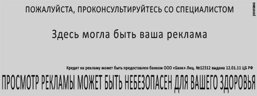
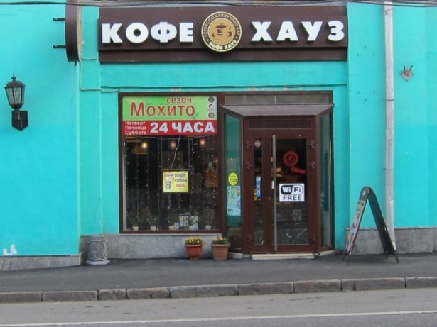

Я не знаю ни одного примера, когда федеральная антимонопольная служба реально принесла пользу людям. Вероятно, конечно, такие примеры при желании найти можно. Но вот так с ходу не могу найти ни одного. ФАС наверняка сдерживает рост каких-нибудь ЖД-тарифов и может быть еще каких- нибудь баррелей нефти, но в силу своей профессиональной деятельности мне известна лишь деятельность этой службы в контексте наблюдения за соблюдением компаниями федерального закона «О рекламе».

Проблема в том, что действующий в России закон «О рекламе» это инструмент с помощью которого можно делать абсолютно всё. Любую работающую на рынке компанию можно сделать компанией неработающей если взять в руки данный закон. Определимся с терминами:
Реклама - информация, распространенная любым способом, в любой форме и с использованием любых средств, адресованная неопределенному кругу лиц и направленная на привлечение внимания к объекту рекламирования, формирование или поддержание интереса к нему и его продвижение на рынке;
Под рекламой таким образом подразумевается абсолютно всё.
Первый раз мне довелось общаться с федеральной антимонопольной службой лет 12 назад. Я тогда был редактором газеты «Экспресс-объявления» и в качестве редактора был вызван на беседу. Мы нарушили закон «О рекламе». Как? Логика сотрудников ведомства была далека от здравого смысла, но до абсурдности железна. В газете печатались объявления. К примеру о продаже жилья. Если вы печатаете в газете объявление о продаже жилья, то вы печатаете рекламу. Ведь вы прочитали формулировку выше? Но. В те годы продажей жилья нельзя было заниматься частным лицам. Этот вид деятельности был лицензируемым. Следовательно реклама без публикации номера лицензии признавалась сотрудниками ведомства вводящей в заблуждение. Следовательно беседа, предписание, штраф.
Второй раз предписание пришло уже в мою собственную газету. Суть нарушения была такова. Рекламный модуль в нашей газете не мог быть опознан сотрудниками ведомства как реклама. Размещенная на полполосы информация о новом тарифе сотовой компании не была рекламой до тех пор пока в углу мелким шрифтом, чтобы только можно было прочитать, не было явно написано «реклама», ведь в статье 16 закона «О рекламе» так и написано:
Размещение текста рекламы в периодических печатных изданиях, не специализирующихся на сообщениях и материалах рекламного характера, должно сопровождаться пометкой "реклама" или пометкой "на правах рекламы".
Казалось бы «для дебилов»? Но закон суров, но закон. К тому же появляются возможности. Возможности воздействовать на кого угодно.
Очередной случай «когда коту делать нечего — он яйца чешет» произошёл в начале недели в Москве. Экспертный совет по рекламе московского УФАС, судя по этому сообщению, вынесет предупреждение крупнейшей российской сети кофеен «Кофе Хауз» по поводу рекламы бесплатного доступа к беспроводной сети Wi-Fi.
Поводом для претензии стала показавшаяся антимонопольному ведомству неуважительной к русскому языку надпись «Wi-Fi free». Ведь free это не русское слово, а надпись это реклама, а несколько раз упомянутый выше закон предписывает на территории РФ распространять рекламу только на русском языке.

Распространяя информацию любым способом — задумайтесь.